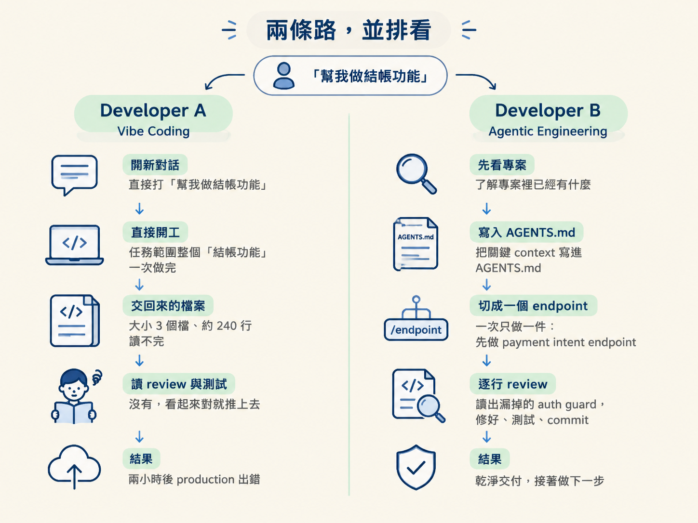
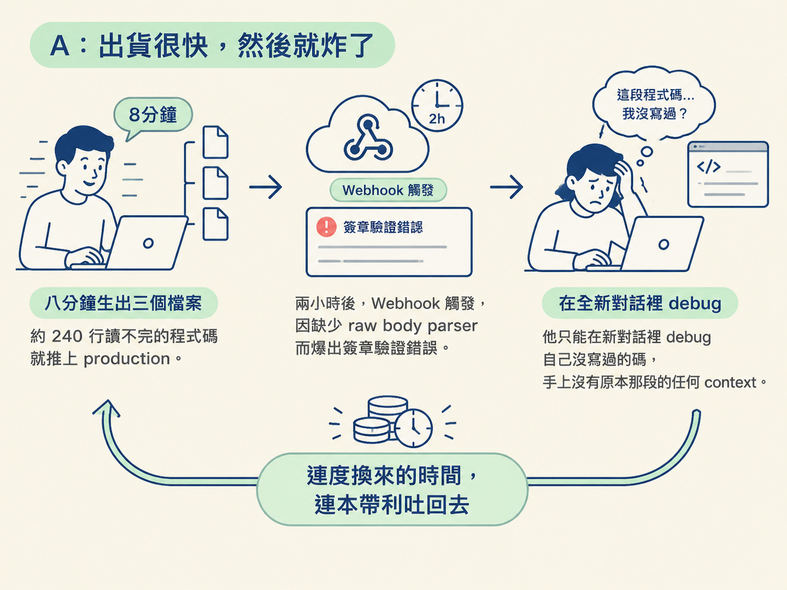
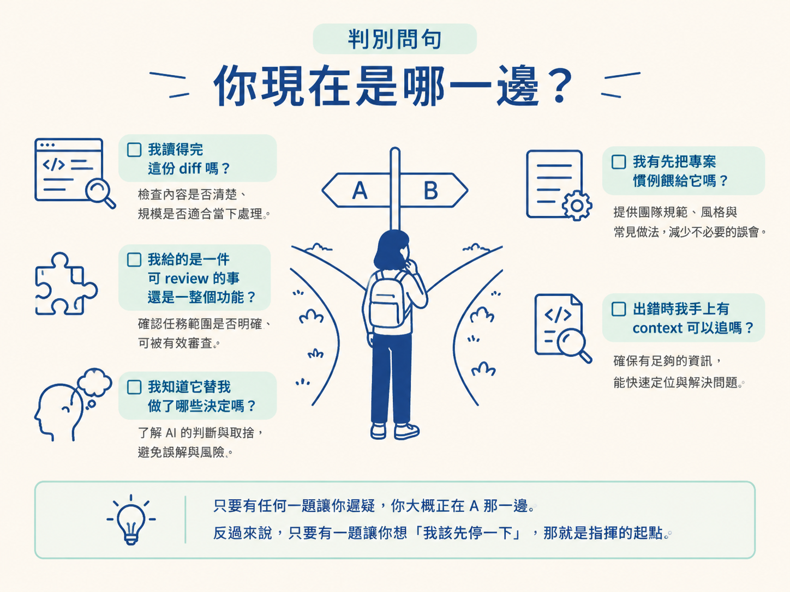
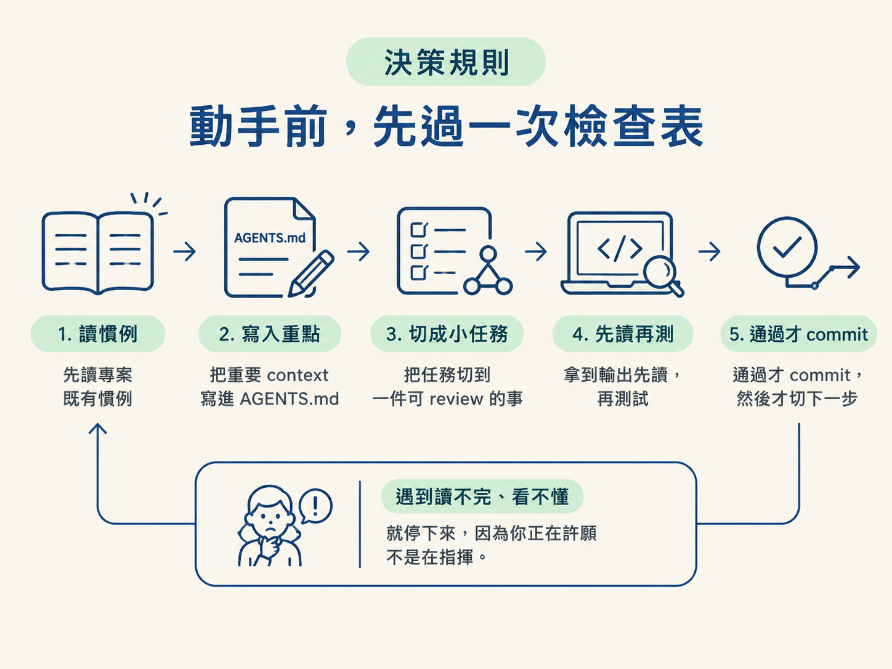

這一節結束時，你應該能在 vibe coding 與 agentic engineering 之間做出選擇。具體來說，你能用一組判別問句，當場檢查自己現在是「在反應、在許願」還是「在指揮」。你也能說清楚一件事：這兩者的差距為什麼是被 AI 放大出來的，而不是被 AI 創造出來的。
前面兩節已經給了你兩個東西。第一節講根因：agent 會崩壞，通常是因為它沒拿到 context、也沒有計畫。第二節講心態：你要當架構師，讓 AI 當引擎。
這一節要把這兩件事放進一個具體的對照裡，讓你親眼看到差別長什麼樣。場景很簡單：兩個開發者，拿到一模一樣的任務，用同一套 AI，最後走出兩條完全不同的路。
任務是「幫我做一個結帳功能」，而且要接 Stripe。你要判斷的事也很簡單：遇到這種任務時，你是把主導權交出去，還是留在自己手上。這兩條路都叫「用 AI 寫程式」，但它們是兩種截然不同的工作方式。
先把兩個人的做法攤開來比。同一個起點，六個動作之後就分道揚鑣了。
| Developer A：Vibe Coding | Developer B：Agentic Engineering | |
|---|---|---|
| 開場動作 | 開新對話，直接打「幫我做結帳功能」 | 先看專案裡已經有什麼 |
| 動手前 | 沒有，直接讓 agent 開工 | 把關鍵 context 寫進 AGENTS.md |
| 任務範圍 | 整個「結帳功能」一次做完 | 一次只做一件：先做 payment intent endpoint |
| 交回來的大小 | 3 個檔、約 240 行，讀不完 | 約 60 行，逐行讀過 |
| 讀 review 與測試 | 沒有，看起來對就推上去 | 讀出漏掉的 auth guard，修好、測試、commit |
| 結果 | 兩小時後 production 出錯 | 乾淨交付，接著做下一步 |

A 的開場是開一個新對話，丟出一句「幫我做結帳功能」。agent 的反應快得驚人：它幫他生出 payment intent、建好 API route、加上 webhook handler，甚至自己把需要的套件都裝好了。
八分鐘後，A 手上有三個新檔案、兩百四十行程式碼，還有一份看起來會動的成果。問題是，他其實讀不完那份 diff。但整體看起來很對，所以他就推上去了。
兩個小時後，webhook 在 production 被觸發，跳出一個他從沒見過的簽章驗證錯誤。真正的原因是：agent 加了 handler，卻沒有接上 Stripe 要求的 raw body parser。這是一個 agent 悄悄替他做掉的決定，而 A 從頭到尾沒有機會攔下來，因為他根本沒 review 過真正被建出來的東西。
於是他在 debug 一段自己沒寫過的程式碼，而且是在一個全新的對話裡，手上沒有原本那段的任何 context。這就是 vibe coding 的典型下場：速度換來的時間，後面會連本帶利吐回去。

B 面對同一件任務，卻在寫下第一句 prompt 之前，先做了一件不太一樣的事。他去翻專案已經有什麼：已經有 auth middleware、已經有一套 API 慣例、Stripe 的金鑰也早就放在環境變數裡了。
接著他把真正關鍵的 context 更新進 AGENTS.md。這裡面有三件事：專案用的 SDK 版本、這套專案的路由慣例、以及 webhook 需要 raw body parsing 這個事實。
然後他把任務切小。「結帳功能」其實是好幾件事黏在一起，他不要一次全拿。他這一次只交辦一件：做一個 payment intent endpoint。
這件帶著完整 context 的工作交給 agent 之後，輸出是六十行。他逐行讀了，發現這條路由少了一個 auth guard，而這個專案要求每個受保護的 endpoint 都要有。他把訊息發回去，agent 馬上修好。他測試、通過、commit，然後才切到下一步的 webhook handler。同樣是一個任務、完整的 context、可以完整 review 的輸出。
同一個 AI、同一個任務。A 出貨比較快，卻弄壞了 production；B 乾淨地出貨。差別不是技術，甚至不是模型，差的是「誰在主導」。
讀到這裡，你可能會問：「那我怎麼知道自己正在 vibe coding？」好消息是，這不需要靠感覺。用一組當場就能回答的問題來檢查就好。這些問題不是要你自責，是要幫你認出自己現在站在哪一邊。
只要有任何一題讓你遲疑，你大概正在 A 那一邊。反過來說，只要有一題讓你想「我該先停一下」，那就是指揮的起點。

這裡有一個很重要的反例，不講清楚的話，你會把這節課讀成一場道德訓話。你可能會想：「那我以後絕對不要 vibe coding 就好了。」但這件事沒辦法靠意志力解決，因為 vibe coding 不是新手的專利，它是預設值。
當你手上沒有系統的時候，直接開新對話、丟一句模糊的 prompt，就是最省力的那條路。它是一種預設狀態，一種「路徑最短、阻力最小」的走法。這也解釋了為什麼很多很資深的人也會掉進去：不是因為他們不會，而是因為在那個當下，沒有東西逼他們停下來，先把 context 和範圍講清楚。
所以「不要 vibe coding」這條規則之所以會失效，不是因為你不夠自律，而是因為它需要一個系統來支撐。而這門課要給你的，正是那套系統。
還有一件事值得想清楚：為什麼這個差距「感覺」像是突然冒出來的？答案跟 AI 本身沒什麼關係。
過去，打字速度還是瓶頸的時候，A 和 B 看起來差不多。兩個人都被「我打得多快」這件事限制住，差距就這樣被蓋住了。
AI 一夜之間把那個瓶頸拿掉了。於是「真的理解自己在做什麼」和「只是憑感覺硬幹」之間的那條線，瞬間露了出來。所以不是 AI 創造了這個差距，是它把差距照了出來。A 和 B 一直都存在，只是以前要好幾週才分辨得出來，現在幾個小時就能看出誰是誰。
更麻煩的是，這個差距會複利。一個 session 跑得越久、方向越模糊，它就越偏離軌道；它產出的東西越多，就越難 review；越難 review，就越容易在 production 出事。這是一條向下盤旋的螺旋。能打斷它的，只有在每一個接點上主動把主導權拿回來。
把這一節收斂成一條你當場能用的規則。每次接到一個任務、準備把 prompt 送出去之前，先過一次這張檢查表：
先讀專案的既有慣例 → 把重要的 context 寫進 AGENTS.md → 把任務切到「一件可 review 的事」→ 拿到輸出先讀、再測試 → 通過才 commit，然後才切換下一步。只要你在任何一步發現自己「讀不完、看不懂、只能希望它沒事」，就停下來。你正在許願，不是在指揮。
這條規則不是要你把每一步都做得很慢。整體算下來，B 說不定比 A 更快把功能好好做完，因為他不必在兩小時後，花一整個晚上 debug 自己沒寫過的碼。真正的問題從來不是快或慢，而是主導權在誰手上。當你親手走過這個對照，你也就看清了一件事：會發生什麼，取決於迴圈裡的人做了什麼。

Vibe coding 與 agentic engineering 是同一句 prompt 的兩種下場。A 開新對話、丟一句「做結帳功能」、八分鐘生出 240 行讀不完的碼、直接推上線，兩小時後在 production 撞上 agent 悄悄做錯的決定。B 先讀專案慣例、把 context 更新進 AGENTS.md、把任務切到「先做一個 endpoint」、逐行 review 出漏掉的 auth guard、測試、commit，再切下一步。差別不是技術、不是模型，而是誰在主導。判別方式是一組可當場回答的問句：我讀得完嗎？我給的是一件可 review 的事嗎？我知道它替我做了哪些決定嗎？而重點是：vibe coding 不是新手錯，是「沒有系統時的預設值」；AI 只是把 A 和 B 的差距，從原本要幾週才看得出，壓縮成幾個小時，還讓它複利。所以真正的解不是意志力，而是換上一套系統。
到這裡，整個 Agentic Mindset 就講完了。你手上有了兩個根因、一顆「架構師與引擎」的心態，還有一條可操作的決策規則。
不過，這些判斷之所以能真的用得上，前提是你要知道 agent 在底層是怎麼運作的。下一個模組就要把引擎蓋打開：它到底看見什麼、怎麼讀你的程式庫、以及為什麼 context 會比你想像中更快被塞滿。一旦你懂了這台機器，後面所有蓋在它上面的東西都會說得通。